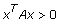
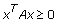
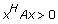
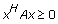

Tests whether Input Matrix is a matrix of special type. Wire data to the Input Matrix input to determine the polymorphic instance to use or manually select the instance.
Input Matrix is the matrix which you want to test for special type.
matrix type specifies which type you want to test for Input Matrix.
10
Symmetric Positive Definite (default)
11
Symmetric Positive Semi-Definite
20
Symmetric
21
Hermitian
relative tolerance specifies the relative tolerance used to test whether Input Matrix is a matrix of special type. The default value is –1. If relative tolerance is less than 0, this VI sets tolerance based on Input Matrix.
is type? is TRUE if Input Matrix is a matrix of special type. Otherwise, is type? is FALSE.
error returns any error or warning from the VI. You can wire error to the Error Cluster From Error Code VI to convert the error code or warning into an error cluster.
Input Matrix is the matrix which you want to test for special type.
matrix type specifies which type you want to test for Input Matrix.
10
Hermitian Positive Definite (default)
11
Hermitian Positive Semi-Definite
20
Symmetric
21
Hermitian
relative tolerance specifies the relative tolerance used to test whether Input Matrix is a matrix of special type. The default value is –1. If relative tolerance is less than 0, this VI sets tolerance based on Input Matrix.
is type? is TRUE if Input Matrix is a matrix of special type. Otherwise, is type? is FALSE.
error returns any error or warning from the VI. You can wire error to the Error Cluster From Error Code VI to convert the error code or warning into an error cluster.
In real cases, a symmetric matrix A is positive definite if

for any non-zero vector x. A symmetric matrix A is positive semi-definite if

for any non-zero vector x. In complex cases, a Hermitian matrix A is positive definite if

for any non-zero vector x. A Hermitian matrix A is positive semi-definite if

for any non-zero vector x.
This VI first tests whether Input Matrix is symmetric (or Hermitian). If the test fails, is type? returns FALSE. Then, this VI tests whether the symmetric (or Hermitian) matrix is positive definite (or positive semi-definite) by Cholesky factorization. If a symmetric matrix is not positive definite (or positive semi-definite), the algorithm for Cholesky factorization fails when it attempts to calculate the square root of a negative number or divide by zero.
This VI uses relative tolerance to determine whether a number is small enough that you consider it as zero when performing Cholesky factorization. If relative tolerance is less than zero, the tolerance in Cholesky factorization is
2.22e–16*n*maxdiag
where n is the order of Input Matrix and maxdiag is the maximum value of diagonal elements of Input Matrix. Otherwise, the tolerance is
relative tolerance*n*maxdiag
Symmetric and Hermitian
A real or complex square matrix is symmetric if
aij = aji
A complex square matrix is Hermitian if
aij = conj(aji)
where conj is the complex conjugate function.
Both instances of the VI include Symmetric and Hermitian values for matrix type.
This VI uses relative tolerance to determine whether the difference between two elements in Input Matrix is small enough to consider them equal. If relative tolerance is less than zero, the tolerance is
2.22e–16*n*max
where n is the order of Input Matrix and max is the maximum absolute value of elements in Input Matrix. For a complex element, max is the maximum absolute value of its real and imaginary parts. Otherwise, the tolerance is
Refer to the Linear Algebra Calculator VI in the labview\examples\Mathematics\Linear Algebra directory for an example of using the Test Matrix Type VI.
 Add to the block diagram
Add to the block diagram Find on the palette
Find on the palette